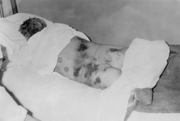

Hyalomma marginatum tick - Bont-legged tick
Hyalomma marginatum, the bont-legged tick, is distributed mostly in the Africa and Asia although in the recent years it has also appeared in the Mediterranean countries in Europe. This tick prefers low to moderate levels of humidity and a long dry season during the summer months. This tick may transmit Bahig and Crimean-Congo Hemorrhagic Fever viruses after bites. Hyalomma is distributed across Europe by the migratory birds that are hosts for it. |
Two of the most common diseases spreading byHyalomma Marginatum are:
|
Crimean–Congo hemorrhagic fever (CCHF) is a tick-borne viral disease caused (???). CCHF is a member of the genus Nairovirus, family Bunyaviridae. It is transmitted to people through the bite of an infected Hyalomma ticks and contact with infected animals and people (??). Mortality rate is about 10-40%. Symptoms. Typically, after a 1-3 day of incubation period following a tick bite (5–6 days after exposure to infected blood or tissues), flu-like symptoms appear, which may resolve after one week. In up to 75% of cases, however, signs of hemorrhage appear within 3–5 days of the onset of illness in case of bad containment of the first symptoms: first mood instability, agitation, mental confusion and throat petechiae, then soon nosebleeds, and vomiting, and black stools. The liver becomes swollen and painful. Disseminated intravascular coagulation may occur as well as acute kidney failure and shock, and sometimes acute respiratory distress syndrome. Patients usually begin to show signs of recovery after 9–10 days from when the symptoms appear, however 30% of the cases result in death on the second week of the illness [1]. Diagnosis of CCHF is based on the laboratory tests:
1. Enzyme-linked immunosorbent assay (ELISA).
Patients with fatal disease, as well as in patients in the first few days of illness, do not usually develop a measurable antibody response and so diagnosis in these individuals is achieved by virus or RNA detection in blood or tissue samples. Source: WHO [2]. Treatment. General supportive care with treatment of symptoms is the main approach to managing CCHF in people [2]. Prevention. It is hard to prevent and control CCHF infection in animals. The option is to use chemicals intended to kill ticks. The vacccine is developed and used on a small scale in Eastern Europe but there is no safe and widely available vaccine for human use. The ways to reduce risk of infection are:
Important links: The medical information on our website is provided without any representations or warranties, express or implied. You must rely only on the medical advice from your doctor. |
Data about Hyalomma marginatum tick is based on the information from Wikipedia page [3] and open-accsess scientific article: The Impact of Climate Trends on a Tick Affecting Public Health: A Retrospective Modeling Approach for Hyalomma marginatum (Ixodidae) [4]. |
Data access and policies.
|
Link to datafiles for insects in Europe (also Hyalomma Marginatum tick). Archive contains: shapefiles used on the website. |